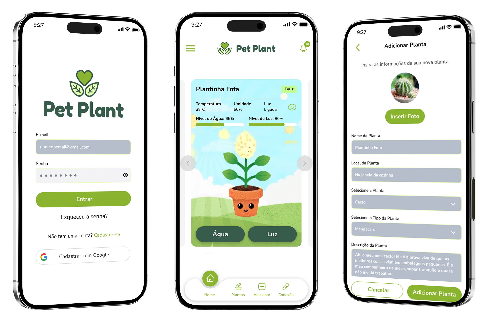
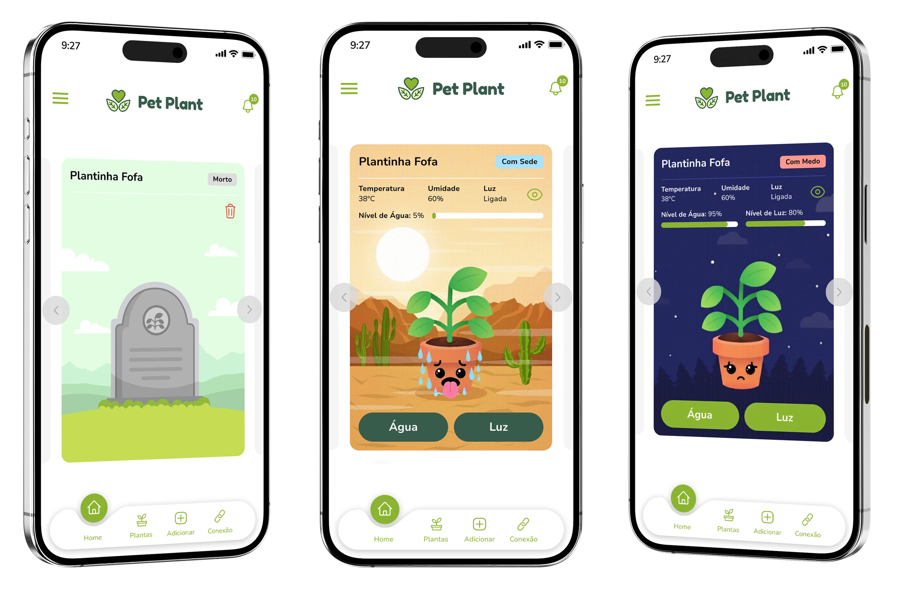

Integrando telemetria de sensores IoT e gamificação afetiva para eliminar a perda de espécimes no cultivo doméstico.
O Pet Plant consolida hardware conectado e uma experiência mobile envolvente para desmistificar o cuidado com plantas em ambientes urbanos. No lugar de suposições e adivinhações manuais, a interface traduz leituras biológicas invisíveis (umidade profunda, luminosidade, fertilidade e temperatura) em orientações claras, contextuais e no momento exato em que o espécime precisa.

O principal obstáculo para o sucesso de quem cultiva plantas em casa é a natureza invisível das variáveis biológicas. Sem indicadores concretos, o cuidado depende de tentativa e erro:
A olho nu é impossível aferir a saturação de umidade da raiz, a condutividade de nutrientes e a intensidade exata de lumens recebidos.
Usuários com agendas cheias esquecem regas periódicas ou aplicam água de forma excessiva — principal fator de morte por apodrecimento radicular.
Cada espécie vegetal possui faixas ideais específicas de temperatura e rega, gerando buscas dispersas e confusas na internet.
Desenvolvi a experiência para transformar dados brutos de sensores em uma jornada empática, onde a planta se comunica como um companheiro vivo:
Arquitetura visual centrada em Umidade, Luz, Fertilidade e Temperatura, com medidores radiais de fácil interpretação instantânea.
Substituição de lembretes fixos por gatilhos reais: o app só notifica quando os sensores registram estresse hídrico ou térmico iminente.
Histórico cronológico de fotos e gráficos de crescimento que reforçam a sensação de progresso e cuidado continuado.
Biblioteca pré-calibrada que carrega automaticamente os thresholds de sensores adequados para cada espécie cadastrada pelo usuário.
A interface foi desenhada para conectar múltiplos dispositivos sem atrito, fornecendo controle tanto para uma única samambaia quanto para um jardim residencial completo:
Representação expressiva que reage ao status dos sensores com microexpressões, criando vínculo afetivo imediato com o usuário.
Pareamento Bluetooth Low Energy ágil para alternar entre diferentes vasos e cômodos residenciais dentro do mesmo app.
O design emprega ilustrações botânicas customizadas, cards flutuantes com sombras suaves e microinterações que tornam a conferência diária agradável:


O Pet Plant demonstrou o potencial da união entre UX emocional e Internet das Coisas: transformando telemetria técnica em orientações empáticas, o produto reduziu drasticamente o descarte de mudas e aumentou a retenção e o tempo de uso do aplicativo.